Karel Havlíček Borovský
(1821-1856)
Havlíček se narodil v Borové u Přibyslavi a zemřel v Praze. Byl vyloučen z kněžského semináře v Klementinu. Působil jako vychovatel v Moskvě a po návratu z Ruska se stal redaktorem Pražských novin.
Aktivně se zapojil do revolučního dění v roce 1848. Stal se členem Svatováclavského výboru, založil Národní noviny (1848-1850) se satirickou přílohou Šotek, účastnil se Slovanského sjezdu a byl zvolen do říšského sněmu. Přestože odsuzoval radikály a hlásil se spíše k umírněnému křídlu liberálů a demokratů, byl několik dní vězněn. Opakovaně se pro své názory ocitl před soudem, ale vždy byl osvobozen. Po zákazu Národních novin začal vydávat v Kutné Hoře politický časopis Slovan (1850-1851). Roku 1851 byl Havlíček zatčen a deportován do Brixenu. Do Čech se mohl vrátit až po čtyřech letech, ale už v roce 1856 umírá na tuberkulózu.
Jaký je rozdíl mezi kritikou, satirou, sarkasmem, ironií a nadsázkou?
|
KAREL HAVLÍČEK BOROVSKÝ
Havlíček se stal symbolem protirakouského odboje a byl oslavován jako národní mučedník. Nejvýznamnější je jeho činnost novinářská. Velmi blízko k ní má i tvorba satirická. Havlíčkovi nešlo o uměleckou kvalitu básní, ale o jasné sdělení názoru. Byl nesmlouvavým kritikem církve, absolutismu a různých společenských zlořádů. Kriticky se díval na poměry v Rusku, ke kterému se upínaly naděje českých stoupenců myšlenky slovanské vzájemnosti. Nebál se zkritizovat Tylovu novelu Poslední Čech. Většina Havlíčkových děl mohla vyjít až po autorově smrti. Ve vyhnanství v Brixenu napsal veršované skladby Tyrolské elegie, Král Lávra a Křest svatého Vladimíra (nedokončeno). Velmi oblíbené jsou jeho epigramy a další satirické básně. K nejvýznamnějším článkům patří Slovan a Čech, Kapitola o kritice, Poslední Čech. Novela od Josefa Kajetána Tyla, Výklad oktrojované ústavy od 4. března, Co jest obec, Správa záležitostí obecných, Proč jsem občanem a cyklus Obrazy z Rus. Překládal Gogola a Voltaira.
|
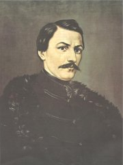
Karel Havlíček Borovský
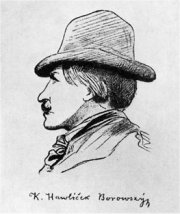
Lehmann: K. H. Borovský
|
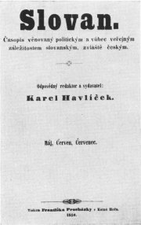
Vydávání časopisu Slovan Havlíček raději sám ukončil, protože tlak úřadů sílil a hrozil mu zákaz jako v případě Národních novin.
Tyrolské elegie, Král Lávra, Křest svatého Vladimíra
Tyto tři nejrozsáhlejší epické skladby Karla Havlíčka Borovského spojuje odpor k absolutismu a tyranské nadvládě.
K.H.Borovský: Tys bratr náš!
Překlad z češtiny do češtiny
Za dnů mladosti kdo radostné
již za děvčaty rád chodíš,
a jak se ti na bradě octne
jen první vous, hned se ženíš;
a tak se hodláš k světu míti,
že dva knězi nestačí křtíti:
[: tys bratr náš! :]
ty umíš hráti mariáš.
Kdo na hrobech praotců slavných
kalamajku tancuješ
a ve čtyřech slovanských hlavních
nářečích brebencuješ;
kdo piješ kvas a slivovici
a chodíš v kozácké čepici:
[: tys bratr náš! :]
věř, nadělí ti Mikuláš.
Kdo věren Bohu, církvi, králi,
co pravý Čech a vlastenec,
Schuhmachermeistra v peci spálí
a nad krám píše: Já jsem švec;
kdo každý pátek, každou středu
novou vymejšlíš abecedu:
[: tys bratr náš! :]
tys vlastenecký goliáš!
Kdo párky vlastenské přikrýváš
svadební ódou v posteli
a velké iliády zpíváš
ke cti Žižkově košili;
kdo k naší milé české vlasti
vždy přirýmuješ slasti, masti:
[: tys bratr náš! :]
tu máš věnec, tu máš, tu máš!
Kdo pro vlast svou rázně a zdárně
piješ a jíš a tancuješ,
a vlasti své v pražské kavárně
celý život obětuješ;
kdo raděj doma jídáš buchty,
než bysi jinde zpíval z kruchty:
tys bratr náš, ty jsi kubík,
hej, hárum, hárum, mik, mik, mik!
Píseň Tys bratr náš! si můžeš poslechnout v podání slavné komické dvojice. Víš, kdo ji nazpíval?
|
Karel Havlíček Borovský: Epigramy
V Havlíčkově pozůstalosti byla nalezena rukopisná sbírka epigramů nazvaná
Jehly, špičky, sochory, a kůly.... Obsahuje většinou čtyřveršové satirické básně, které autor rozdělil do pěti tematických oddílů – Církvi, Králi, Vlasti, Múzám a Světu. Několik epigramů otiskl Havlíček v časopisech ještě za svého života, knižně ale vyšly až roku 1870 v prvním svazku autorových sebraných spisů, kde byla rovněž poprvé publikována skladba Král Lávra.
Karel Havlíček Borovský: Tyrolské elegie
Tyrolské elegie (publikováno roku 1861) jsou ironickou „zprávou“ o násilné deportaci Karla Havlíčka Borovského do Brixenu.
Karel Havlíček Borovský: Král Lávra
Král Lávra (vyšlo roku 1870) zpracovává irskou pohádku o panovníkovi s oslíma ušima, který se bál, aby se o jeho potupě nedozvěděli obyvatelé, a proto dal každého holiče popravit. Kukulín slíbil králi, že jeho tajemství nikdy neprozradí, a tak ho Lávra ušetřil. Jenže holič to nevydržel a pošeptal vše do duté vrby. Český muzikant si větvičkou z vrby opravil basu a ta celé tajemství prozradila...
Karel Havlíček Borovský: Křest svatého Vladimíra
Křest svatého Vladimíra (vytištěno roku 1876) vychází z Nestorova letopisu. Je satirou na samoděržaví i církev. Ruský car Vladimír chce, aby mu bůh Perun zahřměl na jeho svátek. Perun ale rozkaz nevybíravými slovy odmítne. Car ho dá zatknout a vojenský soud odsoudí Peruna k smrti utopením v Dněpru. Když lidé chtějí nového boha, car uspořádá konkurz, ve kterém se utkají židé, katolíci, muslimové a stoupenci řecké církve. Závěrečný zpěv o Vladimírově křtu se buď ztratil, nebo jej Havlíček nestačil dopsat.
|
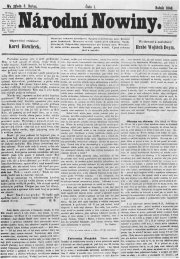
Co je epigram? Najdi přesnou definici ve slovníku.
Čím se zabývá etymologie? Jaký je etymologický význam slova epigram?
Zkus napsat vlastní epigram.
Kde se nachází Brixen?
Co víš o Havlíčkově pobytu v Brixenu a jeho smrti?
Jaký byl osud Havlíčkovy manželky a jejich dcery Zdeňky, „dcery národa“?

Havlíčkův dům v Brixenu
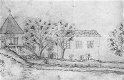
Havlíčkova kresba brixenského domu
Co víš o králi Midasovi? Srovnej jeho příběh s Havlíčkovým Lávrou.
Srovnej líčení z Nestorova letopisu s Křestem svatého Vladimíra.
Neslušná slova byla v prvních vydáních rukopisu vytečkována. Jak tyto výrazy nazývají jazykovědci?
Jak se ti líbí Havlíčkova poezie?
Která z ukázek tě nejvíce zaujala? Proč?
Traduje se, že při pohřbu Karla Havlíčka Borovského položila Božena Němcová na jeho hrob trnovou korunu. Co mělo toto gesto symbolizovat?
|
Božena Němcová (1820-1862)
Barbora Panklová se narodila ve Vídni a zemřela v Praze. Její rodiče působili ve službách kněžny Zaháňské, na jejímž panství v Ratibořicích prožila své dětství. Provdala se za vlastence Josefa Němce, který byl jako úředník finanční stráže velmi často překládán z místa na místo (Litomyšl, Praha, Domažlice...). Nejdříve se stěhovala za ním, ale nakonec se jejich cesty rozešly. Němcová začala navštěvovat pražské vlastenecké salony a sama se vzdělávala. Studovala lidové zvyky na Chodsku a Slovensku. Po propuštění manžela z práce musela finančně zajišťovat chod domácnosti. Velmi ji zasáhla smrt nejstaršího syna Hynka.
|
BOŽENA NĚMCOVÁ
Němcová byla nejvýznamnější spisovatelkou národního obrození a jednou z prvních emancipovaných žen v Čechách. Pro její tvorbu je typický sklon k idealizaci skutečnosti. Zatímco popis prostředí bývá realistický, v mezilidských vztazích zdůrazňuje kladné lidské vlastnosti. Hlavním tématem její prozaické tvorby je láska – milenecká, rodičovská, případně vlastenecká. Řada postav je variací na téma „dobrý člověk“. Velmi životné jsou její ženské představitelky. Tato charakteristika platí nejen pro Babičku, ale i další povídky – Divá Bára, Karla, Chudí lidé, Pan učitel, Dobrý člověk nebo Chyže pod horami a novely – Pohorská vesnice, V zámku a v podzámčí.
Vítězství dobra nad zlem je hlavním tématem jejích pohádkových sbírek – Národní báchorky a pověsti, Slovenské pohádky a pověsti. Svůj pobyt v Chodsku zúročila v cyklu próz Obrazy z okolí domažlického, které popisují život na venkově a zdejší lidové zvyky. Méně významná je její poezie, naopak velmi zajímavá je soukromá korespondence Boženy Němcové.
|
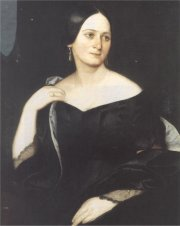
Hellich: Božena Němcová
|
Božena Němcová: Babička
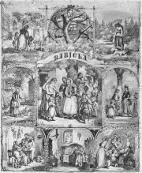
Antonín Gareis: Motivy z Babičky
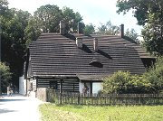
Staré bělidlo v Ratibořicích
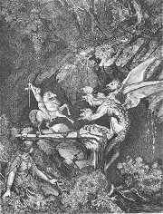
Agathon Klemt: Princ Bajaja
Otazníky kolem Němcové
Podle matriky byla Němcová nemanželskou dcerou české služky ve Vídni, s kterou se pak otec dítěte oženil a měl s ní 12 dalších dětí. Někteří odborníci se domnívají, že Němcová pocházela ze šlechtického rodu a rodiče uvedení v matrice ji pouze vychovávali. Další teorie tvrdí, že matriční zápis byl učiněn později, protože se Němcová narodila v době, kdy její matka byla nezletilá.
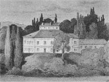
Ratibořice
|
Božena Němcová: Babička
Rozsáhlá povídka Babička s podtitulem Obrazy venkovského života je idylickým zpracováním vzpomínek Boženy Němcové na dětství prožité v Ratibořicích. Děj se odehrává během jednoho roku, což autorce umožnilo podrobně popsat různé lidové zvyky. Babička přijíždí na Staré bělidlo a brzy si získá Barunku a další vnoučata svou laskavostí, moudrostí a úctou k tradicím. Pomáhá také cizím lidem, zejména Kristle a komtese Hortenzii, která pobývá na zdejším zámku. Dokonce si získá úctu samotné paní kněžny. Idylu narušuje pouze tragický příběh Viktorky, která se pomátla z nešťasné lásky.
Božena Němcová: Národní báchorky a pověsti
Sbírka Národní báchorky a pověsti neobsahuje pouze pohádky, ale také pověsti, legendy a další žánry. Na rozdíl od ostatních sběratelů lidové slovesnosti zacházela Němcová s tradičními náměty velmi volně. Nevycházela pouze z autentických pohádek, které si zapsala v Chodsku, ale zpracovávala také vlastní náměty nebo cizí romantické povídky. O co menší mají její texty hodnotu dokumentární, o to významnější jsou po umělecké stránce. Mají tedy blíže k beletrii než lidové slovesnosti. V pohádkách Boženy Němcové vždy vítězí láska a dobro, zlo bývá po zásluze potrestáno. Mají tedy hlavně výchovný účinek. Její pojetí se stalo ideálem celého žánru pohádky. Pohádky se špatným koncem nebo různě aktualizované vedle nich působí jaksi nepatřičně.
Korespondence Boženy Němcové
Kromě próz a básní vyšla rovněž korespondence Boženy Němcové. Nejvíce dopisů napsala manželovi, dětem a přátelům.
|
Co je v Babičce skutečné?
Němcová opravdu strávila dětství v Ratibořicích se svou babičkou Magdalénou Novotnou. Její rodiče rovněž pracovali u paní kněžny Zaháňské. Rodina ale nebydlela na Starém bělidle. Tam pobývala Němcová až mnohem později, když přijela na delší dobu navštívit svou matku.
Myslíš si, že je důležité rozlišit, co si Němcová vymyslela a co opravdu prožila? Proč?
Charakterizuj následující postavy: babička, Barunka, Prošek, Kristla, Viktorka, Hortenzie a paní kněžna.
Které další postavy tě zaujaly?
Co je idyla? Najdi tento termín ve slovníku.
K nejznámějším pohádkám Boženy Němcové patří Princ Bajaja, Čert a Káča, O slunečníku, měsíčníku a větrníku, Potrestaná pýcha, Jak Jaromil k štěstí přišel, Čertův švagr, Sedmero krkavců, O Nesytovi, O perníkové chaloupce, O Smolíčkovi, O neposlušných kozlatech, O kohoutkovi a o slepičce, O kocouru, kohoutu a kose, Jak se Honza učil latinsky, Chytrá horákyně, O hloupém Honzovi nebo Neohrožený Mikeš. Umíš je převyprávět?
Srovnej pohádky Boženy Němcové s Erbenovými.
Zpracovávali oba autoři stejné náměty? V čem se jejich převyprávění liší? Co zůstalo v pohádkách společné?
Srovnej pohádku Chytrá horákyně s Babičkou. Co mají tato díla společného? V čem se liší?
Charakterizuj jednotlivé postavy pohádky Chytrá horákyně.
O kterých osobách se Němcová zmiňuje ve svém dopisu? Co se o nich čtenář dozvídá?
Co na sebe prozrazuje autorka dopisu?
Kdo byl Václav Čeněk Bendl?
Proč nakladatelé vydali korespondenci Boženy Němcové?
Myslíš si, že je správné vydávat cizí soukromé dopisy?
Za jakých podmínek smí někdo zveřejnit tvůj soukromý dopis?
Píšeš dopisy rodičům nebo příbuzným? Proč? Co bývá jejich obsahem? Jak často dopisy píšeš?
|
Internetové stránky
Karel Havlíček Borovský, rozcestník
Král Lávra, Křest sv.Vladimíra, Tyrolské elegie
Němcová: Babička
Němcová: Divá Bára
Rulf: Babiččino údolí
Exkurze
Muzeum Boženy Němcové, Česká Skalice
Babiččino údolí, Ratibořice
Havlíčkův Brod
Brixen
Na památku Karla Havlíčka Borovského bylo město Německý Brod, kde dlouho pobýval, přejmenováno na Havlíčkův Brod. Havlíček zde má i velkolepý pomník.
|
Doporučená četba
Baar, Jindřich Šimon: Paní komisarka (román o B.Němcové)
Beránková, Milena: Karel Havlíček Borovský, Horizont, Praha 1973
Borovička, Michael: Kauza K. H. Borovský, Baronet, Praha 1998
Božena Němcová, paní našeho času, Panorama, Praha 1984
Božena Němcová, Praha 1941
Černý, Václav: Knížka o Babičce, Lidová demokracie, Praha 1963
Havlíček Borovský, Karel: Básnické dílo, SNKLU, Praha 1962
Havlíček Borovský, Karel: Dílo (2 svazky), Československý spisovatel, Praha 1986
Havlíček Borovský, Karel: Lid a národ, Melantrich, Praha 1981
Havlíček Borovský, Karel: Strmé cesty, Kruh, Praha 1990
Ivanov, Miroslav: Zahrada života paní Betty, Panorama, Praha 1992
Janáčková, Jaroslava: Příběh tajemného psaní, O pramenech a genezi Babičky, Akropolis, Praha 2001
Jeřábek, Čestmír: Život a sen (román o B.Němcové)
Morava, Jiří: C.k. disident Karel Havlíček, Panorama, Praha 1991
Morava, J.: Někdejší Betty, Sfinga, Ostrava 1995
Národní noviny (Šotek)
Němcová, Božena: Lamentace, Dopisy mužům, Český spisovatel, Praha 1995
Němcová, B.: Vybrané spisy (4 svazky), SNKLHU
Nováková, Teréza: Maloměstský román (román o Zdeňce Havlíčkové)
Otruba, Mojmír: Božena Němcová, Praha 1964
Procházka, Václav: Karel Havlíček Borovský, Melantrich, Praha 1961
Ravik, Slavomír: Karel Havlíček Borovský, Portrét bojovníka, Pražská imaginace, Praha 1991
Sobková, Helena: Tajemství Barunky Panklové, Portrét Boženy Němcové, Mladá fronta, Praha 1997
Spisy Boženy Němcové (15 svazků), Československý spisovatel
Tille, Václav: Božena Němcová, Odeon, Praha 1969
|
Vypracuj písemný referát o některé z uvedených knih.
Filmy
Babička, režie F.Čáp
Babička, režie A.Moskalyk
Pyšná princezna, Byl jednou jeden král, Bajaja, Tři oříšky pro Popelku, Princ a Večernice a další filmové adaptace pohádek i povídek Boženy Němcové.
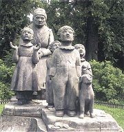
Otto Gutfreund: Sousoší babičky s vnoučaty v Ratibořicích (1920)
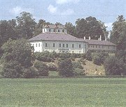
Ratibořice
|
|